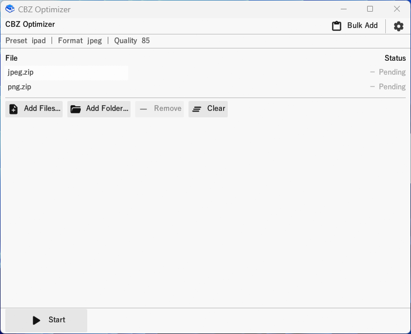
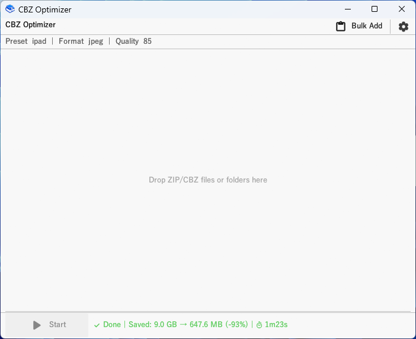

Features
📦 Storage savings
Significantly reduce file size by resizing images to your target resolution.
🔄 Format conversion
Convert JPEG / PNG / WebP / AVIF in bulk — resize and convert in a single pass.
⚡ Speed
Parallel processing across ZIPs and images via rayon.
🖥️ Cross-platform
Windows / Linux / macOS — single binary, no install required.
🎯 Device-ready presets
iPad, Kindle, 4K and more — one flag to optimize for your device.
🖱️ GUI included
Windows drag-and-drop GUI — no CLI knowledge required.
Download
| Platform | Contents |
|---|---|
| Windows | cbz-opt.exe + cbz-opt-gui.exe |
| Linux | cbz-opt (CLI) |
| macOS | cbz-opt (CLI) |
CLI Usage
Resize
# Basic (default: ipad preset 2048x1536, JPEG quality 85)
cbz-opt input.cbz
# Kindle preset
cbz-opt --preset kindle --quality 80 *.cbz
# Custom size
cbz-opt --preset custom --max-width 1280 --max-height 720 input.zipFormat Conversion
# Convert all images to WebP (no resize)
cbz-opt --output-format webp --convert-only input.cbz
# Convert to AVIF for maximum compression (no resize)
cbz-opt --output-format avif --convert-only *.cbz
# Resize AND convert to WebP in one pass
cbz-opt --preset ipad --output-format webp input.cbz--convert-only: skips resizing entirely. Same-format files are passed through without re-encoding — zero quality loss.
GUI (Windows)
Size Presets
| Preset | Width | Height | Device |
|---|---|---|---|
ipad | 2048 | 1536 | iPad (default) |
ipad-air | 2360 | 1640 | iPad Air |
ipad-pro | 2732 | 2048 | iPad Pro |
kindle | 1264 | 1680 | Kindle Paperwhite |
hd | 1280 | 720 | HD display |
full-hd | 1920 | 1080 | Full HD display |
four-k | 3840 | 2160 | 4K display |
custom | (manual) | (manual) | Use -W / -H |
Supported Formats
| Format | Input | Output |
|---|---|---|
| JPEG | Yes | Yes |
| PNG | Yes | Yes |
| WebP (static) | Yes | Yes |
| WebP (animated) | Detected, skipped | — |
| AVIF | — | Yes |
| BMP | Yes | Converted |
| TIFF | Yes | Converted |
| GIF | Skipped | — |
AVIF is supported as output only (--output-format avif). Use --convert-only to convert format without resizing — when set, --preset / -W / -H are ignored.
License
MIT — free to use, modify, and distribute.